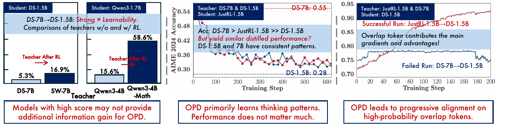
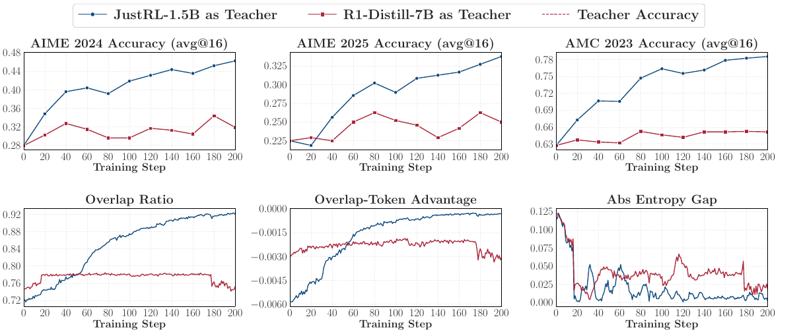
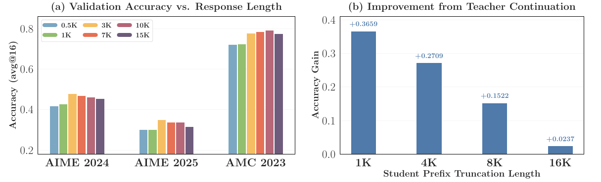
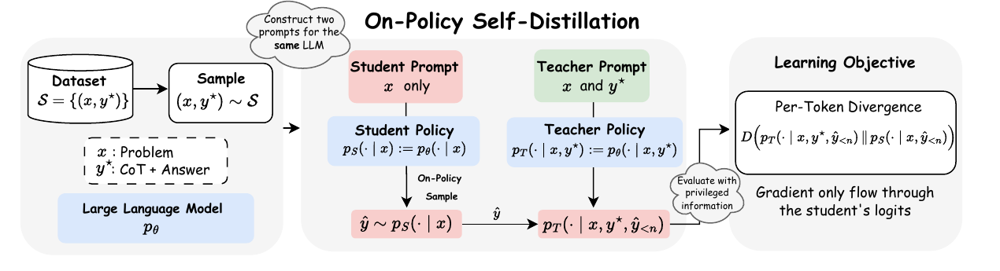
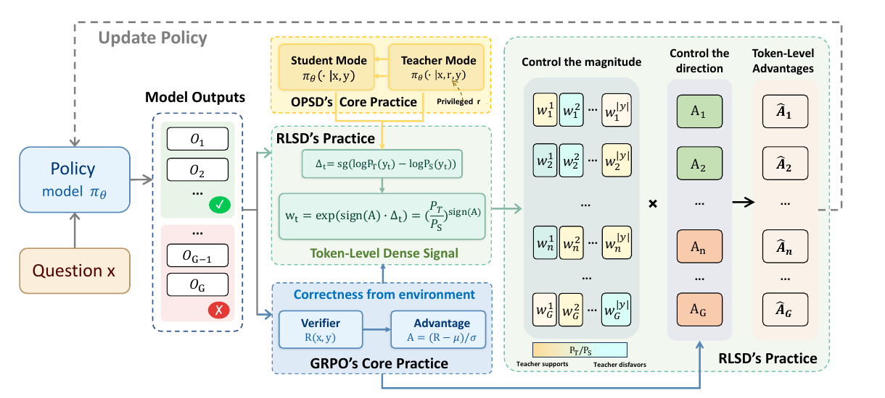
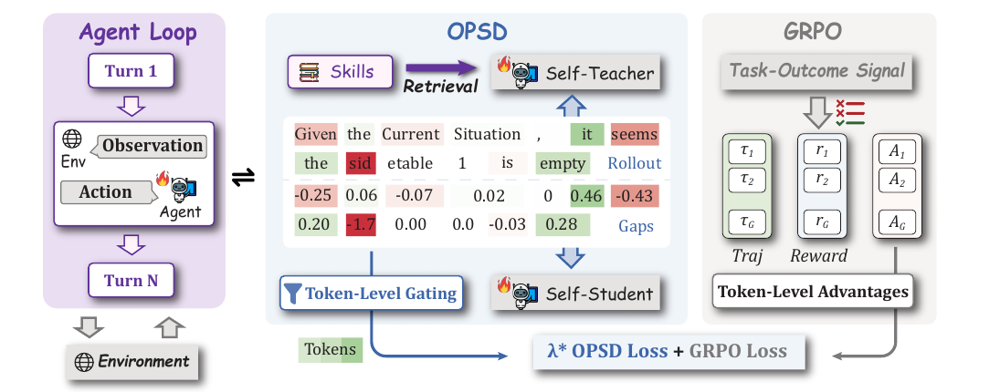

OPD：在策略蒸馏以及其在后训练上的拓展
OPD 这条线表面上是在讨论知识蒸馏，实际上更像是在讨论后训练里 teacher signal 应该以什么权限进入优化过程。从基础的 on-policy distillation，到 Rethinking OPD、Uni-OPD、OPSD、RLSD 和 SDAR，核心变化不是简单换一个 loss，而是不断重新回答一个问题： teacher 给出的信号到底应该是目标、奖励、排序约束、credit 权重，还是只是一种 辅助 gate。
我在读这一系列工作时，更关心的不是某个实验数字，而是它们共同暴露出的信息结构：
student 当前能访问什么状态，teacher 在这些状态上是否可靠，teacher 有没有看到
student 推理时看不到的信息，以及 dense token-level signal 和 sparse
outcome reward 应该如何组合。OPD 的很多问题，都是同一个
log pi_T - log pi_theta 在不同上下文里含义变化后产生的。

1. 从 KL 方向看 OPD 的基本语义
传统知识蒸馏通常是 off-policy 的：teacher 先生成一批固定答案，student 再在 这些 teacher-generated sequences 上做 SFT 或 KL matching。这样做很自然， 也很便宜，但它有一个结构性问题：训练时 student 看到的是 teacher prefix， 推理时 student 却只能沿着自己生成的 prefix 继续走。只要前面某一步偏离 teacher 轨迹，后续状态就可能落到训练时没有覆盖的区域。
OPD 的改法是让 student 自己 rollout。给定 prompt x，先从当前
policy 采样 y ~ pi_theta(. | x)，然后在每个 student-generated
prefix (x, y_<t) 上查询 teacher 的 next-token distribution。
也就是说，teacher 不是在自己最舒服的轨迹上教 student，而是在 student
真正会访问的状态上给局部反馈。
这个目标通常更接近 reverse KL：
L_OPD = E_{y ~ pi_theta(. | x)}
[ sum_t D_KL(pi_theta(. | x, y_<t) || pi_T(. | x, y_<t)) ]
KL 方向不是数学细节，而是训练语义。Forward KL
D_KL(q || p) 的期望来自 teacher，它更像是要求 student 覆盖
teacher 认为可能的输出区域，因此更适合 teacher-forcing 或离线模仿。
Reverse KL D_KL(p || q) 的期望来自 student，它只关心 student
当前会采到的区域，并在这些区域里向 teacher 支持的 mode 收缩。
如果只看 student 实际采样出的 token，token 级信号可以写成：
r_t = log pi_T(y_t | x, y_<t) - log pi_theta(y_t | x, y_<t)
当 teacher 比 student 更支持这个 token 时，r_t 为正；反之为负。
这也是 OPD 比普通 outcome-reward RL 更吸引人的地方：RLVR 往往只告诉模型
最终答案对不对，而 OPD 试图告诉模型每个 token 在 teacher 看来是否更合理。
2. 基础 OPD：解决 exposure bias，但不保证 teacher 可靠
基础 OPD 的优势可以从三个角度理解。第一，它是 on-policy 的，监督发生在 student 自己生成的轨迹上，因此减少了 off-policy distillation 的 state mismatch。第二，它是 dense 的，每个 token position 都可以拿到 teacher signal。第三，它和自回归语言模型天然匹配，因为语言模型本来就是在 prefix state 上预测 next token。
在工程实现上，OPD 可以有不同粒度。Full-vocabulary OPD 在每个位置上计算
完整词表的 KL，信息最完整，但需要保存或传输 B * T * |V|
量级的 logits，长 response 和大模型下很难承受。Top-k OPD 只在 student
当前 top-k support 上重新归一化后计算 subset KL，是 full-vocab 和 sampled
token 之间的折中。Sampled-token OPD 只看 student 真正采样出的 token，
但因为 token 是从 student distribution 中采样的，它在期望上仍然对应
reverse KL 的单样本估计。
这里有一个容易误解的点：sampled-token OPD 虽然每个位置只用了一个 token， 但训练过程会不断从 student 当前分布中采样，所以它不是固定只看一个点，而是在 student high-probability region 上进行持续覆盖。Rethinking OPD 的实验也说明， sampled-token 往往已经很强，真正明显不稳定的是过度退化的 Top-1 OPD。
但基础 OPD 的问题也从这里出现。Teacher 在 student-generated prefix 上的 distribution 不一定可靠。Student 早期可能走到 teacher 自己不会自然生成的 prefix，这种 off-manifold state 会让 teacher 的 next-token probability 变得噪声化。Teacher benchmark 分数高，并不意味着它在这些 student-visited states 上能给出可用梯度。
这也是 OPD 和普通“强教弱”蒸馏最大的差别：teacher 的强不强不是唯一变量。 更关键的是 teacher 是否能在 student 当前真实访问的局部状态上，给出稳定、 可学习、且和最终任务目标一致的 token-level preference。
3. Rethinking OPD：强 teacher 不等于好 teacher
Rethinking On-Policy Distillation of Large Language Models 这篇论文最有价值的地方，不是提出了一个更复杂的 loss，而是把 OPD teacher quality 从“teacher benchmark 分数”转向了 student-visited states 上的 thinking-pattern compatibility。 换句话说，teacher 要能在 student 自己走到的位置上教得动 student。
论文用几个动态指标来解释 OPD 成败。Top-k overlap ratio 衡量 student 和 teacher 在同一 prefix 下的高概率候选 token 集合是否重合；overlap-token advantage 衡量在共同候选集合里 teacher 是否提供了可利用的概率差异；entropy gap 则衡量两者置信度是否接近。成功的 OPD 中，这些指标通常会随训练稳定改善； 失败的 OPD 中，它们从一开始就停滞，或者后期出现明显退化。

这个结果说明，有效 OPD 主要不是把 student 从零拉到 teacher 的全新 mode， 而是在两者已经共享的高概率区域里重新分配概率质量。论文里一个很关键的观察是， overlap tokens 承载了大约 97% 到 99% 的概率质量。也就是说，OPD 的主要作用 不是探索 teacher 全部支持集，而是不断修正 student 在共同高概率 token 上的 相对偏好。
这也解释了为什么更大的 teacher 不一定更适合 OPD。如果 teacher 和 student 的 thinking pattern 差距太大，student 生成的 prefix 对 teacher 来说可能很 不自然，teacher 虽然全局更强，但局部 target 对 student 不可学。反过来， 如果 teacher 和 student 太相似，teacher 虽然兼容，却没有提供新能力。好的 OPD teacher 应该在两者之间：足够兼容，又有 student 没有的 solution pattern。
这篇论文提出的 off-policy cold start 和 teacher-aligned prompts，本质上都在 解决同一个问题：先让 student 更容易走到 teacher 能教的位置。Cold start 不是 否定 on-policy distillation，而是用短程 SFT 把 student 移到更接近 teacher thinking pattern 的区域；prompt alignment 则从数据侧减少 student rollout 和 teacher 训练分布之间的偏差。
4. 长程限制：dense supervision 不是免费午餐
OPD 最吸引人的地方是 dense token-level supervision，但这份 dense signal 不是免费午餐。随着 response 变长，student-generated prefix 会越来越偏离 teacher 自然生成的轨迹。Teacher 在前几个 token 上可能还能给出可靠 continuation， 但到了很深的 prefix，teacher 看到的上下文可能已经是一个陌生状态。
Rethinking OPD 的长度实验给了一个很直接的信号：response 太短时，监督 token 不够，学习效率低；中等长度时，dense supervision 最有价值；继续拉长后，性能 不再稳定提升，甚至会出现 overlap collapse、student entropy spike、gradient norm spike 等现象。

右图尤其重要：teacher 从短 prefix 接上去继续生成时，还能明显提升准确率； 但 prefix 截断长度越长，teacher continuation 的收益越小。这个现象说明， teacher 并不是在任意 student state 上都可靠。Prefix drift 越严重，teacher 的局部判断越可能变噪。
这个结论对 agentic RL 很关键。Agent 任务中的 trajectory 不只是长文本，还包含 多步动作、环境 observation、工具返回和状态转移。Student 前面一步动作偏了， 后续 observation 就变了，teacher 或 retrieved skill 的适用条件也可能随之失效。 因此，OPD 在长程 agent 场景里不能简单照搬单轮 math reasoning 的经验。
5. Uni-OPD：token gap 还需要 outcome 校准
Rethinking OPD 主要回答 teacher signal 是否 locally exploitable； Uni-OPD 进一步问：这些 token-level gap 聚合成 trajectory return 后， 是否真的和最终 correctness 一致？这个问题很重要，因为 teacher 在局部 token 上 的偏好，并不自动保证整条轨迹的排序是对的。
对一条 trajectory，可以把每个 token 的 teacher-student gap 平均成：
G_OPD(q, tau) = (1 / |tau|) sum_t
[log pi_T(o_t | q, o_<t) - log pi_theta(o_t | q, o_<t)]
如果 verifier 能判断同一个 prompt 下哪些轨迹正确、哪些错误，那么一个可靠的
distillation return 至少应该满足：正确轨迹的 G_OPD 不低于错误轨迹。
否则 teacher 的 token preference 虽然看起来很细，聚合到 trajectory 层面后却
可能偏好错误答案。
Uni-OPD 把 OPD 的失败拆成两个 perspective。Student perspective 关心 rollout 是否有信息量：如果某个 prompt 下 student rollout 全对或全错，就缺少正负对比。 Teacher perspective 关心 teacher token gap 是否可靠：错误轨迹可能局部很像 teacher 的风格而得到高分，正确轨迹也可能因为路径新颖而被低估。
它的核心做法是 order consistency calibration。先用 verifier 或 outcome reward
定义正确集合和错误集合，再检查 G_OPD 是否把正确轨迹排在错误轨迹
前面。如果不满足，就通过 margin mask 或 margin shift 调整 return。这里的意义
不是否定 teacher，而是给 teacher signal 加上 outcome-level 的约束。
这个视角把 OPD 和 RLVR 的关系讲得更清楚：teacher 提供 dense local preference， verifier 提供 global correctness ordering。当两者一致时，OPD 信号可信；当两者 冲突时，outcome reward 应该有更高权限。
6. OPSD：后训练中的自然想法，也是风险入口
当 OPD 进入 RLVR、GRPO 这类后训练流程后，一个很自然的想法出现了：训练时我们 经常有 ground truth answer、verifier、成功轨迹、工具反馈或 retrieved skill， 能不能让模型自己借助这些 privileged information 提供 dense token supervision？ 这就是 OPSD，即 On-Policy Self-Distillation。

Self-Distilled Reasoner 里最典型的 OPSD 设置是：student 根据题目
x 生成一条 reasoning trajectory，self-teacher 使用同一个模型，
但 prompt 中额外放入 reference answer 或解题提示。然后在 student 已经生成的
token 上同时计算 student log-prob 和 teacher log-prob，用两者的 gap 来构造
dense supervision。这样做的吸引力很明显：轨迹来自当前模型，所以仍然是
on-policy；teacher 不是另一个更大的外部模型，所以推理时不增加额外成本；
token-level gap 又能缓解 RLVR 只有最终 reward 的 credit assignment 问题。
更具体地说，OPSD 想把“答案已知”这件事转化成训练时的局部解释能力。Outcome reward 只能说整条推理最终对不对，而 OPSD 的 self-teacher 试图回答一个更细的 问题：在已经走到这个 prefix 的情况下，哪些 token 更像是通向正确答案的选择？ 如果这个信号可靠，模型就不需要等到整段 response 结束才知道方向，训练效率会 高很多。这也是它在数学推理后训练中看起来特别自然的原因。
但这个自然想法同时也是风险入口。Self-teacher 的“更懂”并不完全来自模型能力， 也来自它看到了 student 推理时看不到的信息。也就是说，OPSD 把 reference answer 从一个训练辅助变量变成了 token distribution target 的一部分。只要 teacher 和 student 的输入不对称，teacher gap 里就会混入两种东西：一部分是真正可迁移的 reasoning preference，另一部分则是 reference answer 带来的不可见条件信息。
但 OPSD 的根本问题也在这里：teacher 和 student 的输入不对称。Student 推理时
只能看到 x，teacher 分支训练时可能看到 (x, r)，
其中 r 是 reference answer、skill 或其他 privileged information。
直接做 distribution matching 等价于要求：
P_S(y_t | x, y_<t) ~= P_T(y_t | x, r, y_<t)
但 student 推理时永远看不到 r。更合理的目标应该是 teacher 在
r 上的边缘分布，而不是每个具体 privileged context 下的条件分布。
这就是 naive OPSD 的信息不对称。后面的 RLSD 和 SDAR，本质上都是在回答同一个
问题：privileged information 可以进入训练，但它到底有没有资格直接规定
student 的输出分布？
7. Self-Distilled RLVR：OPSD 的问题是信息泄漏
Self-Distilled RLVR 对 OPSD 的诊断很关键：naive OPSD 的失败不是简单 overfitting，而是目标函数把 privileged teacher distribution 当成了 student 必须匹配的目标。换句话说，teacher 看到了 student 看不到的东西，却被赋予了 直接规定 student 输出分布的权限。
论文从 KL decomposition 的角度说明，OPSD 目标里会出现 teacher prediction 对
privileged information 的依赖项。这个项反映的是 teacher 的 token prediction
对 R 的依赖程度。Student 看不到 R，所以它无法真正把
这部分 gap 优化掉。训练早期，student 离 teacher marginal 还很远，OPSD 可能
看起来有效；训练后期，可学习的公共部分变小，样本级 privileged detail 反而会
开始主导梯度。
这就是 privileged information leakage。模型可能不是简单记住训练样本，而是因为 目标函数本身要求它去模仿一个依赖不可见变量的 teacher distribution，最终学到 推理时不应该引用的 reference 信息。缩小 support，例如 teacher top-1 或 student top-1，只能降低泄漏带宽，不能改变这个信息结构。
8. RLSD：把 teacher 从目标降为权重
RLSD 的核心修正可以概括为一句话：privileged teacher 不再决定 student 应该生成 什么，只决定 student 已经生成的 token 应该获得多少 credit。它保留 RLVR/GRPO 的主干，让 verifier reward 决定整条 trajectory 的正负方向，再用 teacher gap 做 token-level credit redistribution。

这张图里有两个分支需要分开看。上面的 RLVR 分支负责判断一条 trajectory 最终是正样本还是负样本，也就是给出 sequence-level advantage。下面的 self-distillation 分支负责在 student 已经生成的 token 上比较 teacher 和 student 的相对支持程度。RLSD 的关键不是把两个分支简单相加，而是让它们各司其职： outcome reward 决定方向，teacher gap 只决定力度。
对 student 已经采样出的 token，RLSD 计算：
Delta_t = stop_gradient(
log P_T(y_t) - log P_S(y_t)
)
w_t = exp(sign(A) * Delta_t)
这里 A 是 sequence-level advantage。如果整条轨迹是正的，teacher
更支持的 token 得到更高 credit；如果整条轨迹是负的，teacher 不支持的 token
承担更多 blame。关键是 w_t 只调节幅度，不改变 A 的
符号。方向仍然由 verifier 或环境 reward 决定。
换一种更直观的说法，exp(Delta_t) 可以看成一个 evidence ratio：
teacher 比 student 更相信这个 token，说明这个 token 可能更接近 reference
conditioned reasoning；teacher 比 student 更不相信它，说明它可能偏离了
reference conditioned reasoning。但 RLSD 不让这个 ratio 单独决定更新方向。
当 A > 0 时，它放大学得好的 token；当 A < 0 时，
它放大需要被压低的 token。这个 sign(A) 很关键，因为它把
privileged teacher 从“裁判”降成了“归因器”。
这个设计堵住了 OPSD 最危险的通道。Teacher 不能把一个只存在于 privileged context 下的 token 直接拉进 student 的 support；它只能评价 student 已经生成 出来的 token。再加上 weight clipping、teacher sync 和辅助信号衰减，privileged information 的权限被限制在 credit shaping，而不是 distribution target。
因此 RLSD 的创新不是“用了 privileged information”，而是重新划定了它的权限： privileged teacher 可以解释哪些 token 更像是成功/失败的原因，但不能替代 verifier 来决定策略更新方向。
9. SDAR：多步 agent 中更保守的接入方式
SDAR 把问题放到 multi-step agent 后训练里。这里 teacher signal 比单轮 RLVR 更不稳定，因为 agent 每一步动作都会改变后续 observation。一个 retrieved skill 可能本身是对的，但如果 student 早期动作偏了，后续状态已经不匹配这个 skill， teacher 的负向 gap 就不一定说明 student token 错了。

SDAR 的场景比 RLSD 更复杂。数学题里的 privileged information 通常是 reference answer 或 verified solution，至少它和最终任务目标相对直接；agent 任务里的 privileged information 往往是 retrieved skill、历史经验、工具使用模式或任务 分解提示。它们不一定总是和当前状态严格对齐。Agent 如果前一步 action 选错了， 后续 observation 会改变，此时 teacher 看到的 skill 可能仍然“看起来正确”， 但对 student 当前这条轨迹未必是正确指导。
因此 SDAR 采取比 RLSD 更保守的路线：不把 teacher gap 写进 RL advantage， 而是保持 GRPO 主目标不变，再加入一个 gated auxiliary loss：
Delta_t = log pi_T(y_t | s_t+) - log pi_theta(y_t | s_t)
g_t = sigmoid(beta * Delta_t)
L = L_GRPO + lambda_SDAR * L_SDAR
当 teacher 更支持当前 token 时，g_t 更大，辅助 likelihood
强化更强；当 teacher 不支持时，token 只是少拿一些 auxiliary credit，而不是被
直接惩罚。这体现了 SDAR 的 asymmetric trust：positive endorsement 相对可信，
negative gap 可能来自 skill 噪声、retrieval 错误、grounding 失败或状态漂移，
因此不应该轻易夺走 RL 主目标的控制权。
这也是 SDAR 图中 “self-distilled” 和 “agentic RL” 两部分并列存在的原因。 GRPO 仍然负责从环境反馈里学习任务成功的方向；skill-conditioned teacher 只是给 student 已经做出的 action token 提供额外的局部强化。训练结束后， student 并不需要继续依赖外部 skill prompt，而是把那些稳定、可迁移的行为模式 内化到策略里。相比 naive OPSD，SDAR 更像是在问：哪些 skill hint 可以被当成 正向证据吸收，哪些不确定信号应该被隔离在辅助 loss 里？
从这个角度看，RLSD 和 SDAR 都是在修 OPSD，但修法不同。RLSD 面向 verifier reward 比较可靠的 RLVR 场景，让 teacher 做 token credit redistribution； SDAR 面向 skill-conditioned multi-step agent，把 teacher 降级为 auxiliary trust gate。RLSD 的关键词是 credit redistribution，SDAR 的关键词是 risk isolation。
10. 统一理解：OPD 的本质是 teacher 权限管理
把这些工作连起来看，OPD 家族的演化不是“teacher 越强越好”，而是“teacher signal 应该以什么身份进入训练”。
基础 OPD 中，teacher 是 student on-policy state 上的 token-level evaluator。 Rethinking OPD 进一步强调，teacher 必须和 student 的 thinking pattern 兼容， 并且真的提供 student 还没有掌握的可迁移能力。Uni-OPD 则把这个问题推进到 outcome 层面：teacher 的 token gap 不能只是在局部看起来合理，还需要和最终 correctness 的排序保持一致。
OPSD 之后，问题的重心转向 privileged information 的权限管理。当 teacher 看到了 reference answer、skill 或其他 student 推理时看不到的信息，直接做 distribution matching 就会有泄漏风险。RLSD 的处理方式是把 teacher 从生成目标 降级为 token credit multiplier；SDAR 在多步 agent 场景里更进一步，把 teacher signal 隔离成 gated auxiliary signal。
因此，真正值得关注的不是某个公式本身，而是同一个
log pi_T - log pi_theta 在不同信息结构下的含义。它可以是 token reward，
可以是 trajectory return 的组成部分，也可能成为 privileged leakage 通道；
在更安全的设计里，它只是 credit weight 或 auxiliary gate。
11. Take Away
读完这一系列工作后，我最大的感受是：OPD 不是一个“找个强模型来教弱模型”的 简单故事。真正难的地方在于，teacher 的信号到底能不能信、能信到什么程度、 又应该以什么方式进入训练。很多时候，teacher 给出的 token-level preference 看起来很细，但它未必和最终任务目标一致；如果 teacher 还看到了 student 推理时看不到的信息，直接蒸馏反而会把问题带进模型里。
所以我现在更倾向于把 OPD 看成一种“信号使用方式”的问题，而不是单纯的 distillation trick：当 teacher 和 student 的状态足够接近时，可以让 teacher 直接做局部 token 修正；当 teacher signal 和 correctness 可能冲突时，需要 verifier 来校准；当 teacher 依赖 privileged information 时，它就不应该再 直接规定 student 要生成什么，而更适合作为 credit weight 或 auxiliary gate。 这也是 RLSD 和 SDAR 相比 naive OPSD 更有意思的地方。